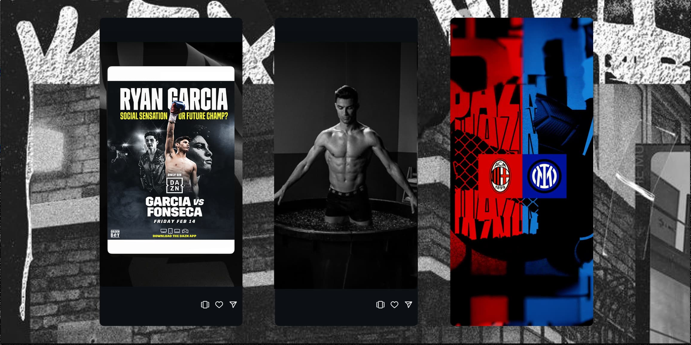
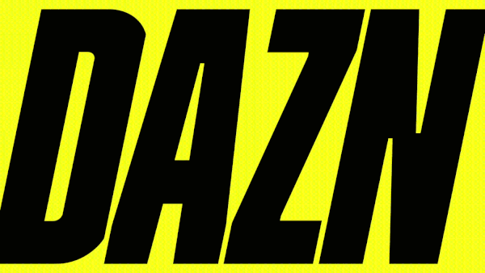

Global platform launch for DAZN, the
sports streaming service. The brief was to establish the
brand around a single idea — Raw Sport — and roll it out
across every touchpoint: broadcast idents, fight promos,
social content, and outdoor campaigns in markets worldwide.
Part of a core creative team at Dentsu McGarryBowen, I
worked across concept, art direction, and copy — helping
define the visual language and editorial tone that gave the
platform its identity.
The Work
The output spanned 360 — broadcast, social, OOH, and
print — across global markets. In any given week the team
would be cutting fight promos, building season-launch
campaigns, and producing platform idents simultaneously.

Social content across fight promos, athlete features, and matchday graphics.

Broadcast motion — idents and programme packaging.
The visual identity was built as a toolkit — a system
flexible enough to work across sports, markets, and
formats while keeping the brand unmistakable. Developed
alongside the DAZN in-house team and the Dentsu creative
department, it gave local teams the tools to produce
on-brand content at speed.
Studio wall showing the range of output across the campaign.Credits